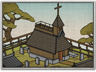

Requires
- Buildings: 
- Arts:

- Religions:

Enables
- Buildings:

Basic Building Statistics (can be modified by difficulty level, arts, skills, traits and retainers)
- Cost: 1500
- +1 happiness for the Christian population
- +4% to town growth from all buildings
- Spreads Christianity to neighbouring provinces (+3 religious zeal)
- Converts the populace to Christianity (+4 religious zeal)
- Enables recruitment of Rank 1 missionaries
Clan Effects
- Improves the rate at which chi arts are mastered: +10%
- Each Christian chain building enables you to sustain one additional missionary (to a maximum of 5)
Description
Sheep require shepherds.
A mission will aid the conversion of the Japanese to Christianity, but it will also add to the unease of Buddhists. It is a home and spiritual fortress for the missionaries who spread out across the land, bringing the Word to new flocks. The Tokugawa Shoguns considered Christianity to be a great threat to the good order of Japan. Centuries-old traditions, including in matters of faith, were considered to be a unifying force. In 1636 Dutch traders, the last Europeans in Japan, were confined to Dejima Island in Nagasaki harbour, effectively barring foreign influences, including foreign religions. The Jesuits had already gone home with the Portuguese, and the Dutch were more interested in profit than proselytising. Dejima was forbidden territory to the Japanese, save for the few allowed to live there and service Dutch needs. Japan remained largely closed to outsiders and their alien ideas for over 200 years.